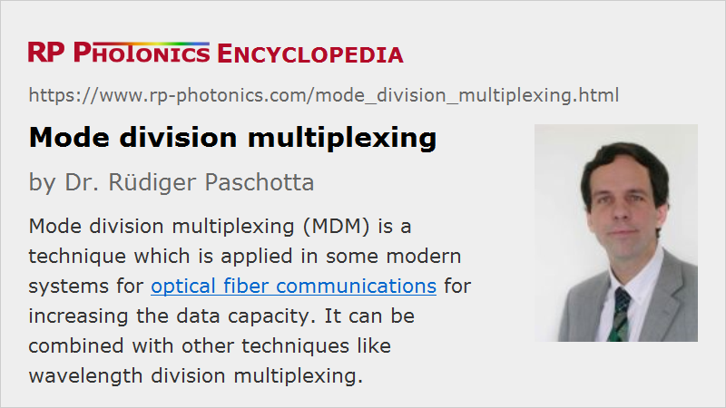

Mode Division Multiplexing
Acronym: MDM
Definition: a multiplexing technique for data transmission in fibers, where different fiber modes are used for different channels
More general term: optical multiplexing
Category: lightwave communications
How to cite the article; suggest additional literature
Author: Dr. Rüdiger Paschotta
Mode division multiplexing (MDM) is a technique which is applied in some modern systems for optical fiber communications for increasing the data capacity. Essentially, the idea is using different guided modes of a multimode fiber for different transmission channels.
Components for MDM
The following types of components are typically used for mode division multiplexing:
- Typically, the used multimode fibers have a relatively small number of guided modes and are thus called few-mode fibers. They may in principle be step-index fibers, but often one uses graded-index fibers optimized for minimum differential modal group delay (DMGD), because that allows the use of simpler receiver technology.
- Certain kinds of spatial multiplexers (SMUX) are required for (a) injecting signals from multiple single-mode fibers into the core of a few-mode fiber and (b) for separating the signals after transmission, sending them to different photodetectors. Different kinds of spatial multiplexers have been developed. Some of them are based on certain phase plates, others on photonic laterns.
- For maintaining sufficiently high signal powers over large distances, there are special fiber amplifiers (mostly erbium-doped fiber amplifiers = EDFAs) for few-mode fibers, which are optimized for minimum variations of modal gain.
Because there is always a substantial cross-talk between the different channels, receivers need to be equipped with special electronics based on MIMO techniques (multiple inputs / multiple outputs), similar to those which are already widely used for wireless data transmission, for example for WLAN.
The requirements on fusion splicers are more demanding than for splicing ordinary multimode fibers, since one needs to minimize mode -dependent losses.
Combination with Other Multiplexing Techniques
Mode division multiplexing can be combined with other techniques like wavelength division multiplexing. It is expected to become important for satisfying the first one rising demand of data transmission capacities.
For a more detailed discussion, including the comparison with other techniques, see the article on space division multiplexing.
Suppliers
The RP Photonics Buyer's Guide contains 2 suppliers for mode division multiplexing devices.
Questions and Comments from Users
Here you can submit questions and comments. As far as they get accepted by the author, they will appear above this paragraph together with the author’s answer. The author will decide on acceptance based on certain criteria. Essentially, the issue must be of sufficiently broad interest.
Please do not enter personal data here; we would otherwise delete it soon. (See also our privacy declaration.) If you wish to receive personal feedback or consultancy from the author, please contact him e.g. via e-mail.
By submitting the information, you give your consent to the potential publication of your inputs on our website according to our rules. (If you later retract your consent, we will delete those inputs.) As your inputs are first reviewed by the author, they may be published with some delay.
Bibliography
| [1] | S. Berdagué and P. Facq, “Mode division multiplexing in optical fibers”, Appl. Opt. 21 (11), 1950 (1982), doi:10.1364/AO.21.001950 |
| [2] | F. Yaman et al., “Long distance transmission in few-mode fibers”, Opt. Express 18 (12), 13250 (2010), doi:10.1364/OE.18.013250 |
| [3] | B. Zhu et al., “70-Gb/s multicore multimode fiber transmissions for optical data links”, IEEE Photonics Technol. Lett. 22 (22), 1647 (2010), doi:10.1109/LPT.2010.2070490 |
| [4] | Y. Jung et al., “First demonstration and detailed characterization of a multimode amplifier for space division multiplexed transmission systems”, Opt. Express 19 (26), B952 (2011), doi:10.1364/OE.19.00B952 |
| [5] | T. Sakamoto et al., “Transmission over large-core few-mode photonic crystal fiber using distance-independent modal dispersion compensation technique”, Opt. Express 19 (26), B478 (2011), doi:10.1364/OE.19.00B478 |
| [6] | R. Ryf et al., “Mode-division multiplexing over 96 km of a few-mode fiber using coherent 6 × 6 MIMO processing”, J. Lightwave Technol. 30 (4), 521 (2012), doi:10.1109/JLT.2011.2174336 |
| [7] | J. D. Love and N. Riesen, “Mode-selective couplers for few-mode optical fiber networks”, Opt. Lett. 37 (19), 3990 (2012), doi:10.1364/OL.37.003990 |
| [8] | Q. Kang et al., “Accurate modal gain control in a multimode erbium doped fiber amplifier incorporating ring doping and a simple LP01 pump configuration”, Opt. Express 20 (19), 20835 (2012), doi:10.1364/OE.20.020835 |
| [9] | V. A. J. M. Sleiffer et al., “73.7 Tb/s (96 × 3 × 256-Gb/s) mode-division-multiplexed DP-16QAM transmission with inline MM-EDFA”, Opt. Express 20 (26), B428 (2012), doi:10.1364/OE.20.00B428 |
| [10] | D. J. Richardson, J. M. Fini and L. E. Nelson, “Space-division multiplexing in optical fibers”, Nat. Photonics 7 (5), 354 (2013), doi:10.1038/nphoton.2013.94 |
| [11] | T. Hayashi et al., “Physical interpretation of intercore crosstalk in multicore fiber: Effects of macrobend, structure fluctuation, and microbend”, Opt. Express 21 (5), 5401 (2013), doi:10.1364/OE.21.005401 |
| [12] | P. Sillard, M. Bigot-Astruc and D. Molin, “Few-mode fibers for mode-division-multiplexed systems”, J. Lightwave Technol. 32 (16), 2824 (2014), doi:10.1109/JLT.2014.2312845 |
| [13] | P. J. Winzer, “Making spatial multiplexing a reality”, Nat. Photonics 8 (5), 345 (2014), doi:10.1038/nphoton.2014.58 |
| [14] | R. G. H. van Uden et al., “Ultra-high-density spatial division multiplexing with a few-mode multicore fibre”, Nature Photonics 8, 865 (2014), doi:10.1038/nphoton.2014.243 |
| [15] | Y. Jung et al., “Cladding pumped few-mode EDFA for mode division multiplexed transmission”, Opt. Express 22 (23), 29008 (2014), doi:10.1364/OE.22.029008 |
| [16] | G. Lopez-Galmiche et al., “Few-mode erbium-doped fiber amplifier with photonic lantern for pump spatial mode control”, Opt. Lett. 41 (11), 2588 (2016), doi:10.1364/OL.41.002588 |
See also: space division multiplexing, few-mode fibers, graded-index fibers, fiber amplifiers
and other articles in the category lightwave communications
|  |
If you like this page, please share the link with your friends and colleagues, e.g. via social media:
These sharing buttons are implemented in a privacy-friendly way!